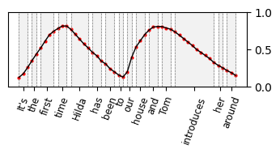
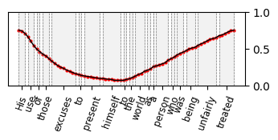
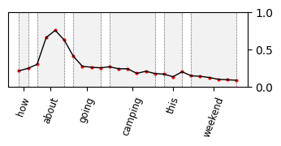
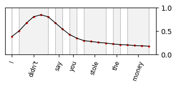

DrawSpeech
Expressive Speech Synthesis Using Prosodic Sketches as Control Conditions
[Code] [Try Our Online Model to Draw Your Own Sketches]
Weidong Chen1, Shan Yang2, Guangzhi Li2, Helen Meng1, Xixin Wu1
1The Chinese University of Hong Kong
2Tencent AI Lab
Abstract. Controlling text-to-speech (TTS) systems to synthesize speech with the prosodic characteristics expected by users has attracted much attention. To achieve controllability, current studies focus on two main directions: (1) using reference speech as prosody prompt to guide speech synthesis, and (2) using natural language descriptions to control the generation process. However, finding reference speech that exactly contains the prosody that users want to synthesize takes a lot of effort. Description-based guidance in TTS systems can only determine the overall prosody, which has difficulty in achieving fine-grained prosody control over the synthesized speech. In this paper, we propose DrawSpeech, a sketch-conditioned diffusion model capable of generating speech based on any prosody sketches drawn by users. Specifically, the prosody sketches are fed to DrawSpeech to provide a rough indication of the expected prosody trends. DrawSpeech then recovers the detailed pitch and energy contours based on the coarse sketches and synthesizes the desired speech. Experimental results show that DrawSpeech can generate speech with a wide variety of prosody and can precisely control the fine-grained prosody in a user-friendly manner.
Contents
System Overview
Figure 1. Overview structure of the proposed DrawSpeech. Paired speech and text data are used for training. User-supplied text and drawn pitch or energy sketch are used as inputs during inference.
Speech Synthesis Conditioned on Sketches
| Text | Sketches | FastSpeech 2 | NaturalSpeech 2 | DrawSpeech |
|---|---|---|---|---|
| It's the first time Hilda has been to our house and Tom introduces her around. |  | |||
| So what is the campaign about? | ||||
| Decent clothing and bedding, and a diet sufficient to support him. | ||||
| His use of those excuses to present himself to the world as a person who was being unfairly treated. |  | |||
| The judge, in passing sentence of death, told him he richly deserved the punishment. | ||||
| He had a great hostility toward his environment, whatever it happened to be. | ||||
| Nothing is impossible to a willing heart. | ||||
| The army found the people in poverty and left them in comparative wealth. | ||||
Speech Synthesis with Fine-grained Prosody Control
Example 1
| Text | Original Audio |
|---|---|
| How about going camping this weekend? |
| Target | Sketches | DrawSpeech |
|---|---|---|
| Emphasis on the word "how" | ||
| Emphasis on the word "about" |  | |
| Emphasis on the word "going" | ||
| Emphasis on the word "camping" | ||
| Emphasis on the word "this" | ||
| Emphasis on the word "weekend" |  |
|
| Emphasis on the words "going" and "weekend" | ||
| Emphasis on the words "about" and "this" |
Example 2
| Text | Original Audio |
|---|---|
| I didn't say you stole the money. |
| Target | Sketches | DrawSpeech |
|---|---|---|
| Emphasis on the word "didn’t" |  | |
| Emphasis on the word "say" | ||
| Emphasis on the word "you" | ||
| Emphasis on the word "stole" | ||
| Emphasis on the words "say" and "money" | ||
| Emphasis on the words "say" and "you" | ||
| Emphasis on the words "didn't" and "stole" |  |
|
| Emphasis on the words "I", "stole" and "money" |
Speech Synthesis with Text Only
| Text | Ground Truth | FastSpeech 2 | NaturalSpeech 2 | DrawSpeech |
|---|---|---|---|---|
| The wardsman still exacted dues, of which more directly. | ||||
| For examples to a determination of the optimum organization of the President's protection. | ||||
| And through all ate heartily at every meal, slept soundly at nights, and talked with cheerfulness on almost any subject. | ||||
| Nevertheless, such a breach, in which so many agents participated. | ||||
| An inquiry was at once set on foot, and the frauds were traced to Watts. |